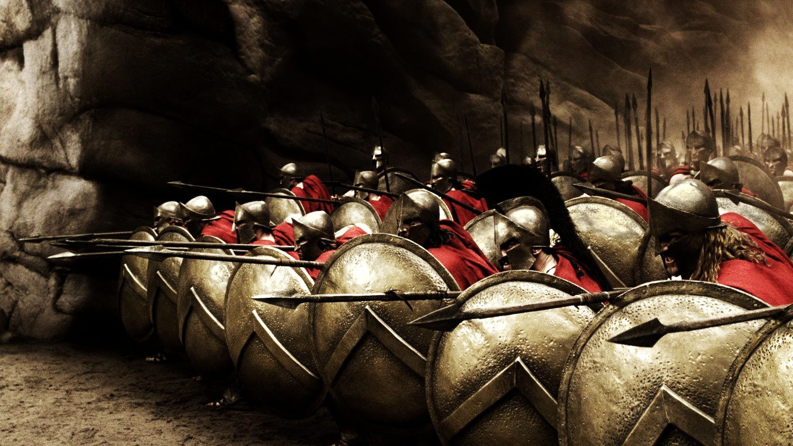
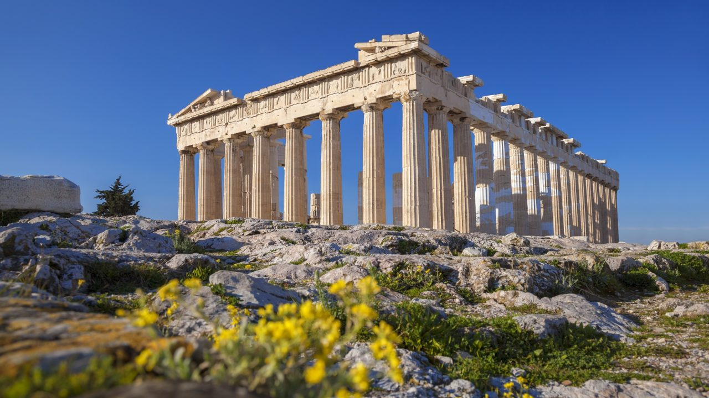

Summary of Ancient Greece
Ancient Greece was full of myths, heroes, and amazing ideas. They invented democracy, loved the Olympics, and told stories about gods like Zeus and Athena.

Greek city-states like Athens and Sparta had different ways of life. Athens was all about art and learning, while Sparta focused on being tough warriors.

They also made incredible art and architecture, like the Parthenon, and their philosophers like Socrates and Aristotle still influence us today.
